Graphics, Tables, Reports, and Reproducibility
agriRank Development Team
Source:vignettes/v08-graphics-reporting-reproducibility.Rmd
v08-graphics-reporting-reproducibility.RmdCommunication vignette Package:
agriRank Version targeted:
0.14.0 Owns: turning a fitted object into
a figure, a table, a report and a record that a reviewer can check and a
future analyst can rerun.
1. Why this vignette exists
An analysis that cannot be communicated has not finished, and one that cannot be rerun has not been done.
Both failures are ordinary. A figure exported as a screen-resolution bitmap cannot be repaired for a journal. A table of means beside a rank test is internally inconsistent. A methods section written by hand drifts from the code that produced the numbers. A results object that exists only in one R session cannot be checked by anyone.
Every function in this vignette exists to close one of those gaps, and all of them work from the fitted object rather than from numbers copied out of it. That is the point: what is reported cannot drift from what was run.
Generate the figure, the table and the methods text from the object that produced the result, not from a transcription of it.
2. Learning objectives
After working through this vignette, the reader should be able to:
- produce the standard design and regression figures from a fitted object;
- explain why the default figures show observed data rather than only means;
- apply the shared journal theme and know what it standardises;
- export a figure at a journal width, in a format that stays editable;
- choose colour that survives a colour-blind reader and a monochrome printer;
- produce a manuscript table with the uncertainty attached to every estimate;
- state what belongs in a table and what does not;
- generate a reproducible methods-and-results skeleton from the object;
- export a fitted object for a reviewer or a later session;
- assemble a reproducibility record that lets a colleague reproduce the numbers exactly.
3. The communication module in one map
| Function | Produces | From |
|---|---|---|
agri_plot() |
the standard design figures | a design fit |
agri_np_plot() |
the standard regression figures | a regression fit |
agri_np_curves() |
several engines overlaid | data and a set of engines |
agri_np_forest() |
coefficient intervals | a regression fit |
agri_np_levels() |
the response at each factor level | a regression fit |
agri_interactive(),
agri_np_interactive()
|
an HTML widget | either |
agri_theme() |
the shared journal styling | any ggplot |
agri_save_figure() |
a file at a journal width | any ggplot |
agri_table() |
a manuscript table | any fit |
agri_format_ci() |
an estimate with its interval, as text | numbers |
agri_report() |
a methods-and-results skeleton | any fit |
agri_dashboard() |
an assembled Quarto view | any fit |
export_results() |
a stored object | any fit |
4. Self-contained starting objects
crd_comm <- simulate_agri("crd", seed = 1301, n = 6)
fit_crd <- np_crd(yield ~ treatment, crd_comm, method = "auto")
sp_comm <- simulate_agri("split_plot", seed = 1302, n = 4)
if (requireNamespace("permuco", quietly = TRUE) ||
requireNamespace("ARTool", quietly = TRUE)) {
fit_sp <- np_splitplot(
yield ~ irrigation * cultivar,
sp_comm,
block = block,
whole_plot = irrigation,
subplot = cultivar,
method = "auto"
)
}
#> Registered S3 method overwritten by 'lme4':
#> method from
#> na.action.merMod car
#> boundary (singular) fit: see help('isSingular')
#> boundary (singular) fit: see help('isSingular')
#> boundary (singular) fit: see help('isSingular')
miss_comm <- simulate_agri("repeated_missing", seed = 1303, n = 8,
missing_rate = 0.10)
des_miss <- agri_design(
height ~ treatment * time,
miss_comm,
design = "repeated",
subject = subject,
within = time
)
set.seed(1304)
reg_comm <- data.frame(x = seq(0, 10, length.out = 60))
reg_comm$y <- 4 + sin(reg_comm$x / 2) + rnorm(nrow(reg_comm), 0, 0.20)
fit_ss <- agri_np_regression(y ~ x, reg_comm, method = "smoothing_spline")
set.seed(1305)
int_comm <- expand.grid(plants = 1:9, rep = 1:5)
int_comm$yield <- 40 + 7 * int_comm$plants - 0.55 * int_comm$plants^2 +
rnorm(nrow(int_comm), 0, 1.2)
fit_igrid <- agri_np_regression(
yield ~ plants,
int_comm,
method = "integer_grid",
integer_base_method = "smoothing_spline",
predictor_support = "observed_integer"
)5. The design figures
5.1 Observed data
agri_plot(fit_crd, type = "data")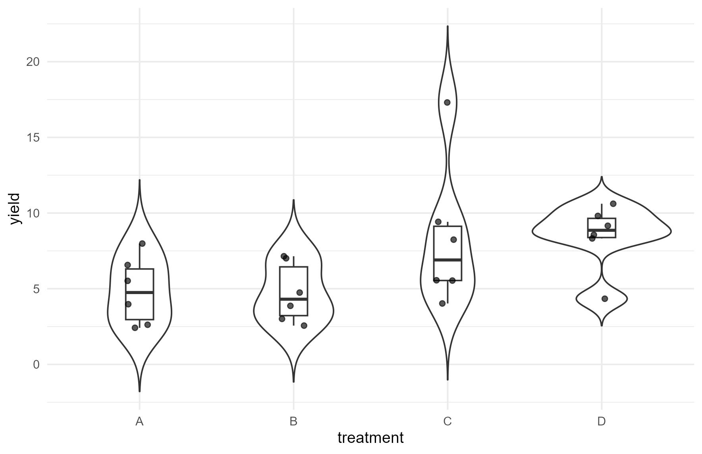
Observed values by treatment. Every point is one plot.
5.1.1 Why the default shows the data
A figure of means with error bars hides bimodality, a single extreme plot, and unequal spread. Each of those changes what the test means, and none is visible in a bar chart.
This is not a stylistic preference. A rank-based test asks about distributions, and a figure that shows only a location summary has withheld the quantity the test examined.
5.3 Missingness
agri_plot(
agri_rank(des_miss, method = "incomplete_wild", B = 299, seed = 1301,
missing_assumption = "MCAR"),
type = "missing"
)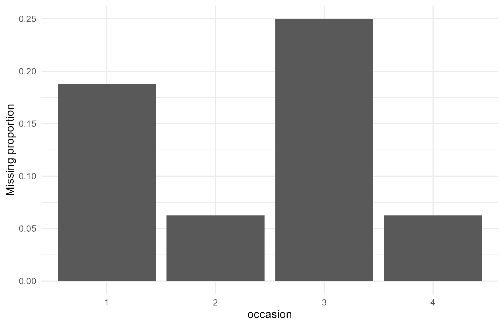
Where the gaps are. Concentration in one treatment or at one occasion is the pattern to look for.
A missingness figure belongs in the supplementary material of any longitudinal paper. It answers, at a glance, the question a reviewer will otherwise ask.
5.4 The available types
data.frame(
type = c("data", "effects", "interaction", "missing", "contrasts"),
shows = c("observed values by treatment",
"estimated effects with intervals",
"cell means across two factors",
"the pattern of absent values",
"planned contrasts with intervals")
)
#> type shows
#> 1 data observed values by treatment
#> 2 effects estimated effects with intervals
#> 3 interaction cell means across two factors
#> 4 missing the pattern of absent values
#> 5 contrasts planned contrasts with intervals6. The regression figures
agri_np_plot(fit_ss, type = "fit")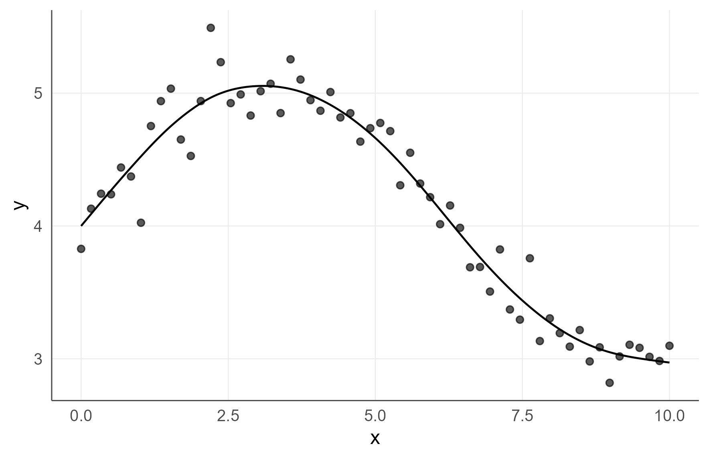
Fitted curve over the observed points.
agri_np_plot(fit_ss, type = "residuals")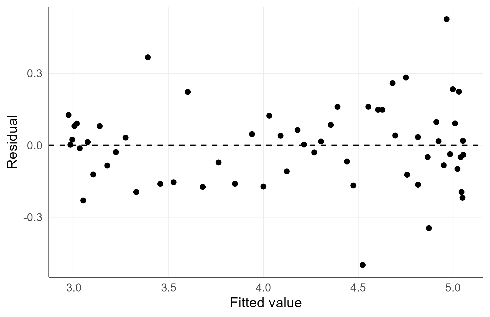
Residuals against fitted values. Structure here means the curve is missing something.
agri_np_plot(fit_ss, type = "derivative")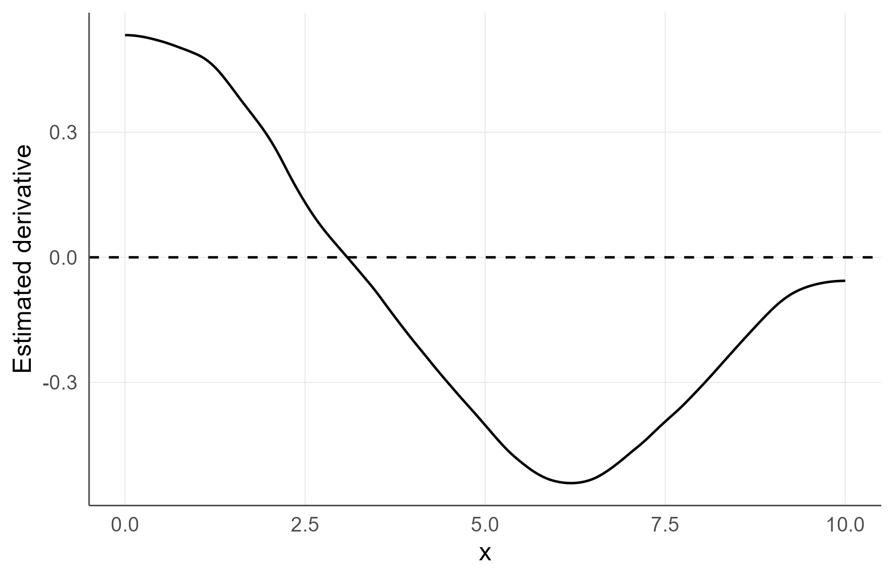
The slope of the fitted curve. Where it crosses zero the response turns over.
6.1 The full set
data.frame(
type = c("fit", "residuals", "derivative", "surface", "qq",
"scale_location", "order", "efficiency", "difference",
"levels", "forest"),
shows = c("the fitted curve over the data",
"residuals against fitted values",
"the slope of the curve",
"a response surface over two gradients",
"residual quantiles",
"spread against fitted values",
"residuals in data order, for drift",
"response per unit of input, integer support",
"gain from one more unit, integer support",
"the response at each factor level",
"coefficient intervals")
)
#> type shows
#> 1 fit the fitted curve over the data
#> 2 residuals residuals against fitted values
#> 3 derivative the slope of the curve
#> 4 surface a response surface over two gradients
#> 5 qq residual quantiles
#> 6 scale_location spread against fitted values
#> 7 order residuals in data order, for drift
#> 8 efficiency response per unit of input, integer support
#> 9 difference gain from one more unit, integer support
#> 10 levels the response at each factor level
#> 11 forest coefficient intervals6.2 An integer-support fit is drawn differently
agri_np_plot(fit_igrid, type = "fit")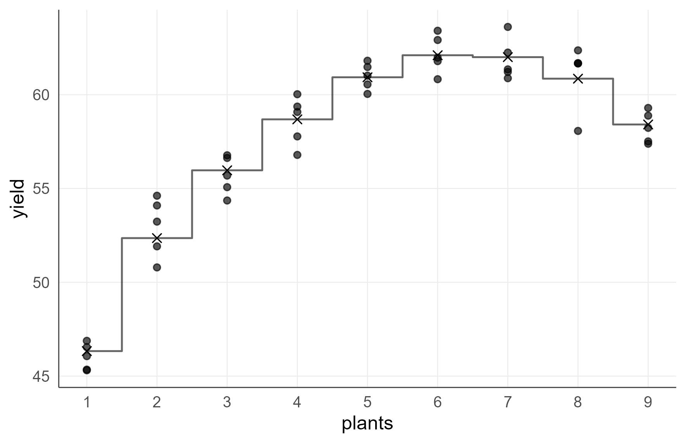
Steps and crosses, not a continuous line. There is nothing between two admissible decisions.
6.3 Interactive inspection
# Not run in the vignette: it opens a browser widget.
if (requireNamespace("plotly", quietly = TRUE)) {
agri_np_interactive(fit_ss, type = "fit")
}The interactive layer is for exploration on your own screen. It does
not belong in a manuscript, and the static figures above are what
agri_save_figure() exports.
7. The shared theme
if (requireNamespace("ggplot2", quietly = TRUE)) {
p <- ggplot2::ggplot(crd_comm, ggplot2::aes(x = treatment, y = yield)) +
ggplot2::geom_boxplot(outlier.shape = NA) +
ggplot2::geom_jitter(width = 0.15, alpha = 0.6) +
ggplot2::labs(x = "Treatment", y = "Yield (t/ha)")
print(p + agri_theme())
}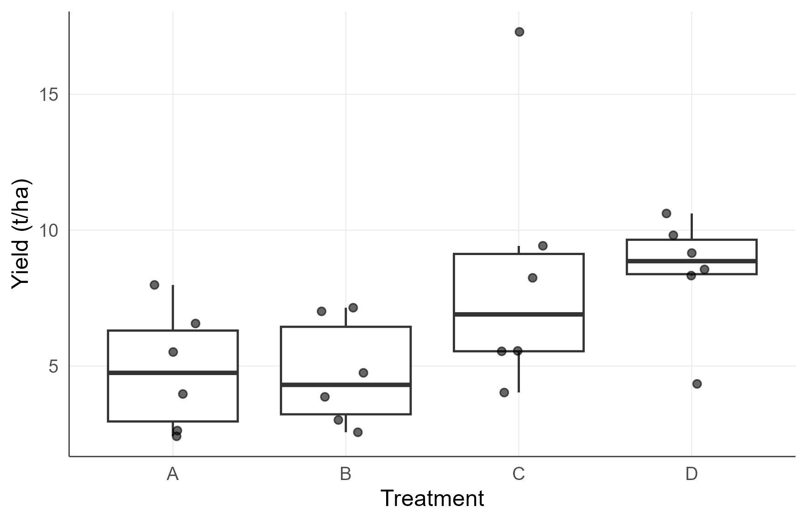
The same figure with the package theme applied explicitly.
7.1 What it standardises
| Element | Choice | Why |
|---|---|---|
| minor gridlines | removed | they compete with the data |
| axis lines | drawn | a reader needs the frame |
| base size | readable at journal width | figures are printed small |
| legend | compact | it should not dominate the panel |
7.2 It is still a ggplot
if (exists("p")) {
print(p + agri_theme() +
ggplot2::coord_flip() +
ggplot2::labs(caption = "Any layer can still be added."))
}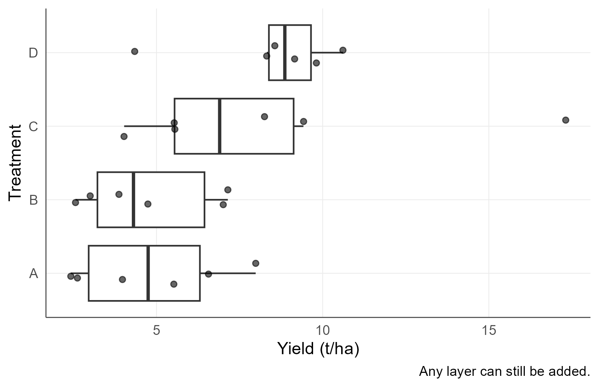
The theme is a starting point, not a constraint.
Every figure this package produces is a plain ggplot
object. Nothing is locked, and the theme can be replaced entirely.
8. Colour that survives the reader
set.seed(1306)
gd <- expand.grid(cultivar = factor(c("A", "B", "C")),
dose = seq(0, 180, length.out = 12))
gd$yield <- 5 + 0.06 * gd$dose - 0.00017 * gd$dose^2 +
c(A = 0, B = 1.2, C = -0.6)[gd$cultivar] + rnorm(nrow(gd), 0, 0.5)
gfit <- agri_np_regression(yield ~ dose + cultivar, gd,
method = if (requireNamespace("mgcv", quietly = TRUE))
"gam" else "kernel")
agri_np_plot(gfit, predictor = "dose", group = "cultivar", palette = "color")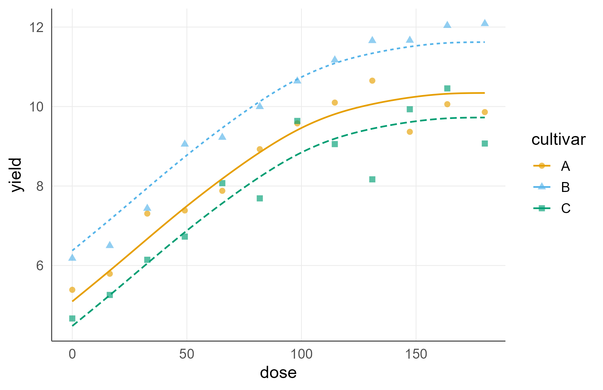
Grouped curves in the colour-blind-safe default palette.
agri_np_plot(gfit, predictor = "dose", group = "cultivar", palette = "grey")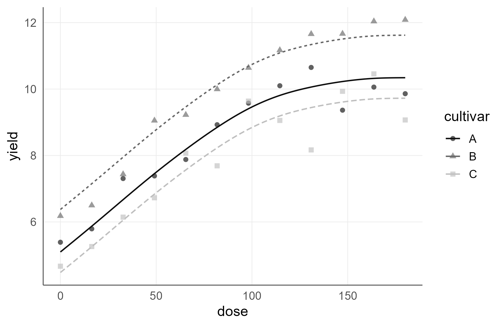
The same figure in grey tones, safe for monochrome print.
8.1 Why this is an argument and not a manual override
Roughly one man in twelve has some form of colour vision deficiency, and many journals still print figures in black and white. A palette chosen by hand is lost the next time the figure is rebuilt; a palette chosen by argument survives.
The default is the Okabe-Ito palette, which is distinguishable under the common forms of colour vision deficiency.
8.2 Units on the axis
agri_np_plot(fit_ss, type = "fit", x_unit = "weeks", y_unit = "cm")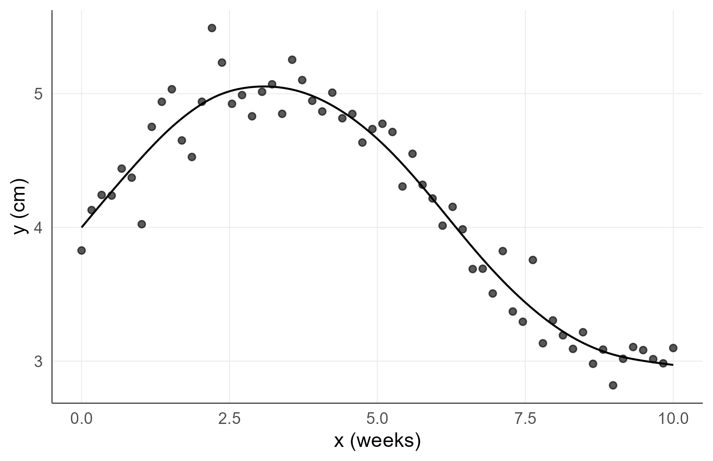
Axis labels carrying their units.
An axis without its unit is not a finished figure.
9. Export at journal widths
p_fit <- agri_np_plot(fit_ss, type = "fit")
# One column, TIFF with LZW compression, as most agronomy journals require.
agri_save_figure(p_fit, "figure_2.tiff", width = "one_column", dpi = 600)
# The same figure as an editable vector, for a thesis or a revision.
agri_save_figure(p_fit, "figure_2.pdf", width = "one_column")
# Full width, for a two-panel figure.
agri_save_figure(p_fit, "figure_3.eps", width = "full")9.1 The widths
width |
Typical use |
|---|---|
"one_column" |
a single-column figure in a two-column journal |
"middle" |
one and a half columns |
"full" |
the full text width |
9.2 Why the format matters
| Format | Editable | Use for |
|---|---|---|
| TIFF (LZW) | no | journal submission, when a raster is required |
| yes | thesis, revision, any vector workflow | |
| SVG | yes | web, and further editing |
| EPS | yes | older journal pipelines |
| PNG | no | drafts and screens only |
A figure exported as a screen-resolution PNG cannot be repaired later. Export the vector version at the same time, always.
10. Tables from the fitted object
agri_table(fit_crd, what = "omnibus", format = "data.frame")
#> effect statistic df p_value
#> 1 treatment 9.553333 3 0.0227707
agri_table(fit_crd, what = "effects", format = "data.frame")
#> cell n median mean_rank
#> 1 A 6 4.748965 8.166667
#> 2 B 6 4.307502 8.166667
#> 3 C 6 6.900642 15.333333
#> 4 D 6 8.861426 18.333333
head(agri_table(fit_crd, what = "pairs", format = "data.frame"), 6)
#> stratum group1 group2 paired_by_block A cliff_delta hodges_lehmann
#> 1 all A B FALSE 0.50000000 0.0000000 -0.04368773
#> 2 all A C FALSE 0.19444444 -0.6111111 -2.78764849
#> 3 all A D FALSE 0.08333333 -0.8333333 -3.84385921
#> 4 all B C FALSE 0.19444444 -0.6111111 -2.47073300
#> 5 all B D FALSE 0.08333333 -0.8333333 -4.11585716
#> 6 all C D FALSE 0.36111111 -0.2777778 -1.05621072
#> p_value p_adjusted
#> 1 1.00000000 1.0000000
#> 2 0.09269580 0.3707832
#> 3 0.02024057 0.1214434
#> 4 0.09269580 0.3707832
#> 5 0.02024057 0.1214434
#> 6 0.47117000 0.9423400
agri_table(fit_ss, what = "metrics", format = "data.frame")
#> n RMSE MAE MedAE bias Spearman
#> 1 60 0.1693096 0.1283542 0.09768723 1.34485e-13 0.956043310.1 The formats
format |
Returns | Use for |
|---|---|---|
"auto" |
a gt object when that package is present |
the manuscript |
"data.frame" |
a plain data frame | a vignette, or further processing |
"gt" |
a gt object |
forcing the rich format |
"rtf" |
rich text | a Word workflow |
10.2 What belongs in a results table
- the estimate;
- its interval, in the same cell or an adjacent column;
- the stratum in which the comparison was made;
- the number of resampling replicates, in a footnote;
- the multiplicity adjustment, in a footnote.
10.3 What does not
| Do not include | Because |
|---|---|
| a treatment mean beside a rank test | the analysis did not estimate one |
| compact letters without effect sizes | it reports decisions and withholds findings |
| a p-value to more digits than the resampling supports | with B = 999 the floor is 2/1000 |
| an R-squared alone beside a flexible fit | it measures flexibility, not the response |
| an optimum without its uncertainty | a point is not a recommendation |
10.4 An estimate and its interval, as text
agri_format_ci(estimate = c(4.21, 5.06, 5.44),
lower = c(3.88, 4.71, 5.02),
upper = c(4.54, 5.41, 5.86),
digits = 2)
#> [1] "4.2 (3.9; 4.5)" "5.1 (4.7; 5.4)" "5.4 (5.0; 5.9)"agri_format_ci() exists so that the pair travels into a
manuscript table together. An estimate quoted without its uncertainty is
not a result.
11. A methods-and-results skeleton
agri_report(fit_crd, file = "agrirank_crd_report.md",
format = "md", language = "en")
agri_report(fit_ss, file = "agrirank_regression_report.md",
format = "md", language = "en")
report_path <- agri_report(fit_crd, file = tempfile(fileext = ".md"),
format = "md", language = "en")
cat(head(readLines(report_path), 20), sep = "\n")#> # agriRank report
#>
#> ## Experimental design
#> - Design: crd
#> - Response: yield
#> - Factors: treatment
#> - Randomization structure: Treatment assignments are exchangeable across experimental units, subject to the declared treatment structure.
#>
#> ## Missing data
#> - Missing response observations: 0 (0.00%)
#> - The missingness mechanism cannot be inferred from observed data alone; the analysis assumption must be stated.
#>
#> ## Method
#> - Kruskal-Wallis
#>
#> ## Omnibus inference
#> ```
#> effect statistic df p_value
#> 1 treatment 9.553333 3 0.0227707
#> ```11.1 Why generate it rather than write it
A methods section written by hand drifts from the code. The design gets simplified in the prose, the number of permutations is remembered wrongly, the engine named is the one the analyst meant to use.
agri_report() writes the skeleton from the
fitted object, so the reported design, engine, replication and
seeds cannot disagree with what was run.
11.2 It is a skeleton, not a manuscript
The generated text records what was done. It does not, and should not, contain the interpretation. Edit it, add the biology, and keep the generated facts.
11.3 A dashboard
agri_dashboard(fit_crd, file = "agrirank_dashboard.qmd", language = "en")The dashboard assembles the figures and tables of one analysis into a single Quarto document, which is convenient for a supervisor, a co-author, or a laboratory record.
12. Export the object
export_results(fit_crd, file = "agrirank_results.rds")
export_results(fit_igrid, file = "agrirank_integer_results.rds")
rds_path <- export_results(fit_crd, file = tempfile(fileext = ".rds"))
class(readRDS(rds_path))
#> [1] "list"12.1 Why store the object rather than the numbers
A stored object lets a reviewer, a co-author or your future self re-derive every number in the paper, including the ones that did not make it in. A table of numbers does not.
12.2 The full reproducibility record
# Everything a colleague needs to reproduce the analysis exactly.
saveRDS(list(
data = crd_comm,
fit = fit_crd,
session = sessionInfo(),
package = utils::packageVersion("agriRank"),
seeds = c(simulation = 1301, resampling = 1301),
date = Sys.Date()
), "reproducibility_record.rds")| Item | Why it is needed |
|---|---|
| the data as analysed | the file on disk may change |
| the fitted object | it carries the design, engine and call |
sessionInfo() |
backend versions change results at the margin |
| the package version | the engines evolve |
| every seed | resampling is stochastic |
| the date | to match the versions |
13. A bar chart of means
The mistake. Treatment means with standard-error bars, and nothing else.
Why it is wrong. It hides bimodality, extreme plots and unequal spread, all of which change what the test means.
What prevents it.
agri_plot(type = "data") shows observed values by default.
See section 5.1.1.
14. Tabulating means beside a rank test
The mistake. A results table of treatment means under a Friedman analysis.
Why it is wrong. The analysis did not estimate a mean, and the mean can order the treatments differently from the ranks.
What prevents it.
agri_table(what = "effects") returns the quantities the
analysis actually used. See section 10.3.
15. Letters without effect sizes
The mistake. A table of treatments and compact letters.
Why it is wrong. It reports decisions and withholds findings. A reader cannot tell whether a shared letter reflects similarity or low power.
What prevents it. Reporting
agri_effects() beside them.
16. Exporting a screen-resolution bitmap
The mistake. Saving a figure with the RStudio export button at default size.
Why it is wrong. The result cannot be enlarged, edited, or submitted, and the figure has to be rebuilt at revision.
What prevents it. agri_save_figure() at
a named journal width, in both a raster and a vector format. See section
9.
17. Choosing colour by hand
The mistake. scale_colour_manual() with
colours picked from the screen.
Why it is wrong. It is lost on rebuild, and it is rarely checked against colour vision deficiency or monochrome print.
What prevents it. palette = "color" or
"grey" as an argument. See section 8.1.
18. Writing the methods section by hand
The mistake. Describing the analysis from memory after the fact.
Why it is wrong. The prose drifts from the code, and the drift is invisible to everyone including the author.
What prevents it. agri_report()
generates the skeleton from the object. See section 11.1.
19. Keeping only the numbers
The mistake. Copying the table into the manuscript and deleting the workspace.
Why it is wrong. No number can be re-derived, and every reviewer question requires rerunning the analysis from scratch, if the script still works.
What prevents it. export_results() and
the record of section 12.2.
20. Not checking the row count
The mistake. Assuming every supplied row was analysed.
Why it is wrong. A missing value silently removes plots, and the reported n no longer matches the analysed n.
What prevents it. The two-line check of section 12.3.
21. Choose by what you are producing
| You need | Use |
|---|---|
| a figure of the observed data | agri_plot(type = "data") |
| an interaction figure | agri_plot(type = "interaction") |
| a fitted curve | agri_np_plot(type = "fit") |
| residual diagnostics | agri_np_plot(type = "residuals") |
| a coefficient forest plot | agri_np_forest() |
| the response at each level | agri_np_levels() |
| a manuscript table | agri_table(what =, format = "auto") |
| an estimate with its interval, as text | agri_format_ci() |
| a methods skeleton | agri_report() |
| an assembled view for a co-author | agri_dashboard() |
| a record a reviewer can rerun |
export_results() plus section 12.2 |
22. Choose the export by the destination
| Destination | Format | Width |
|---|---|---|
| journal, raster required | TIFF, LZW, 600 dpi | as the guide says |
| journal, vector accepted | PDF or EPS | as the guide says |
| thesis | "full" |
|
| slides | PNG at high dpi, or SVG | "full" |
| draft circulated by email | PNG | any |
23. What the communication layer must deliver
- every figure showing the observed data, not only summaries;
- every axis labelled with its unit;
- every caption stating what a band or interval covers;
- colour that survives colour vision deficiency and monochrome print;
- figures exported at a journal width in an editable format;
- every table estimate accompanied by its interval;
- the stratum, the multiplicity adjustment, the replicate count and the seed, in footnotes;
- a methods paragraph generated from the fitted object;
- the fitted object and
sessionInfo()stored with the manuscript; - the supplied and analysed row counts, checked and equal.
24. A worked reproducibility statement
All figures and tables were generated from the fitted objects using agriRank 0.14.0, so that the reported design, engine, replication and seeds cannot differ from those used in the analysis. Figures were exported with
agri_save_figure()at one-column width, as 600 dpi TIFF for submission and as PDF for archiving, using the package’s colour-blind-safe palette. The fitted objects, the analysed data, all random seeds and the output ofsessionInfo()are deposited with the supplementary material and are sufficient to reproduce every number reported here.
25. Where to go next
| If you now want | Read |
|---|---|
| the analyses these figures describe | Design Foundations, CRD, and RCBD |
| comparisons and compact letters | Effects, Conover, Contrasts, and Factorial Inference |
| the regression figures in context | Nonparametric and Shape-Aware Regression |
| the whole workflow on one experiment | Integrated Agronomic Case Study |
26. Terms used in this vignette
| Term | Meaning here |
|---|---|
| raster | a bitmap image, fixed at its export resolution |
| vector | an image stored as shapes, editable and scalable |
| LZW | a lossless compression scheme accepted for journal TIFFs |
| one-column width | roughly 8 to 9 cm, in a two-column journal |
| Okabe-Ito palette | a colour set distinguishable under common colour vision deficiencies |
| compact letter display | a summary in which treatments not separated share a letter |
| skeleton | generated methods text recording what was done, without interpretation |
| reproducibility record | data, object, seeds, versions and session information together |
Selected references
- Okabe, M., and Ito, K. (2008). Color universal design: how to make figures and presentations that are friendly to colorblind people.
- Tufte, E. R. (2001). The Visual Display of Quantitative Information, 2nd edition. Graphics Press.
- Weissgerber, T. L., Milic, N. M., Winham, S. J., and Garovic, V. D. (2015). Beyond bar and line graphs: time for a new data presentation paradigm. PLoS Biology, 13(4), e1002128. https://doi.org/10.1371/journal.pbio.1002128
- Wickham, H. (2016). ggplot2: Elegant Graphics for Data Analysis, 2nd edition. Springer.
The package also ships a verified RIS library under
inst/references/.